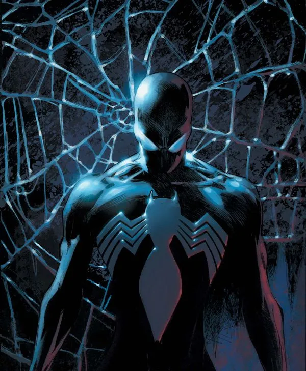
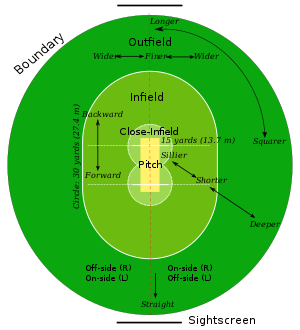
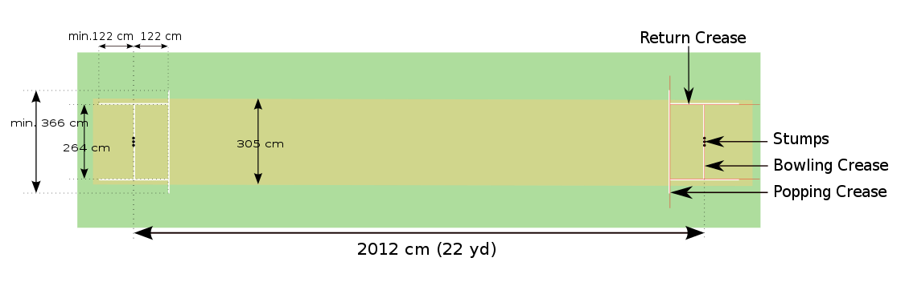
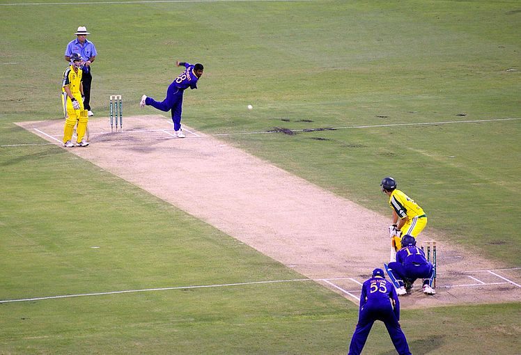
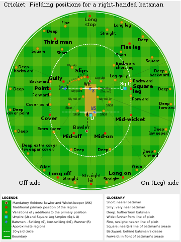

Cricket-The Great sports
Published By Black Spider on Monday

Cricket is a bat-and-ball game played between two teams of eleven players on a field at the centre of which is a 22-yard (20-metre) pitch with a wicket at each end, each comprising two bails balanced on three stumps.
The batting side scores runs by striking the ball bowled at one of the wickets with the bat and then running between the wickets, while the bowling and fielding side tries to prevent this (by preventing the ball from leaving the field, and getting the ball to either wicket) and dismiss each batter (so they are "out").
when the ball hits the stumps and dislodges the bails, and by the fielding side either catching the ball after it is hit by the bat, but before it hits the ground, or hitting a wicket with the ball before a batter can cross the crease in front of the wicket.
History
Orgins
It is generally believed that cricket originated as a children's game in the south-eastern counties of England, sometime during the medieval period. Although there are claims for prior dates, the earliest definite reference to cricket being played comes from evidence given at a court case in Guildford in January 1597 (Old Style, equating to January 1598 in the modern calendar).
One possible source for the sport's name is the Old English word "cryce" (or "cricc") meaning a crutch or staff. In Samuel Johnson's Dictionary, he derived cricket from "cryce, Saxon, a stick". In Old French, the word "criquet" seems to have meant a kind of club or stick. Given the strong medieval trade connections between south-east England and the County of Flanders when the latter belonged to the Duchy of Burgundy, the name may have been derived from the Middle Dutch (in use in Flanders at the time) "krick"(-e), meaning a stick (crook).
Another possible source is the Middle Dutch word "krickstoel", meaning a long low stool used for kneeling in church and which resembled the long low wicket with two stumps used in early cricket. According to Heiner Gillmeister, a European language expert of Bonn University, "cricket" derives from the Middle Dutch phrase for hockey, met de (krik ket)sen (i.e., "with the stick chase"). Gillmeister has suggested that not only the name but also the sport itself may be of Flemish origin
English cricket in the 18th and 19th centuries
The game underwent major development in the 18th century to become England's national sport. Its success was underwritten by the twin necessities of patronage and betting. Cricket was prominent in London as early as 1707 and, in the middle years of the century, large crowds flocked to matches on the Artillery Ground in Finsbury.[citation needed] The single wicket form of the sport attracted huge crowds and wagers to match, its popularity peaking in the 1748 season.
The game underwent major development in the 18th century to become England's national sport. Its success was underwritten by the twin necessities of patronage and betting. Cricket was prominent in London as early as 1707 and, in the middle years of the century, large crowds flocked to matches on the Artillery Ground in Finsbury.[citation needed] The single wicket form of the sport attracted huge crowds and wagers to match, its popularity peaking in the 1748 season.
The game underwent major development in the 18th century to become England's national sport.[37] Its success was underwritten by the twin necessities of patronage and betting.[38] Cricket was prominent in London as early as 1707 and, in the middle years of the century, large crowds flocked to matches on the Artillery Ground in Finsbury.[citation needed] The single wicket form of the sport attracted huge crowds and wagers to match, its popularity peaking in the 1748 season.[
Cricket becomes an international sport
In 1844, the first-ever international match took place between what were essentially club teams, from the United States and Canada, in Toronto; Canada won.[46][47] In 1859, a team of English players went to North America on the first overseas tour.[48] Meanwhile, the British Empire had been instrumental in spreading the game overseas and by the middle of the 19th century it had become well established in Australia, the Caribbean, British India (which includes present-day Pakistan and Bangladesh), New Zealand, North America and South Africa.
Laws and gameplay
In cricket, the rules of the game are specified in a code called The Laws of Cricket (hereinafter called "the Laws") which has a global remit. There are 42 Laws (always written with a capital "L"). The earliest known version of the code was drafted in 1744 and, since 1788, it has been owned and maintained by its custodian, the Marylebone Cricket Club (MCC) in London.
Playing area
Cricket is a bat-and-ball game played on a cricket field (see image, right) between two teams of eleven players each.[64] The field is usually circular or oval in shape and the edge of the playing area is marked by a boundary, which may be a fence, part of the stands, a rope, a painted line or a combination of these; the boundary must if possible be marked along its entire length.
In the approximate centre of the field is a rectangular pitch (see image, below) on which a wooden target called a wicket is sited at each end; the wickets are placed 22 yards (20 m) apart.The pitch is a flat surface 10 feet (3.0 m) wide, with very short grass that tends to be worn away as the game progresses (cricket can also be played on artificial surfaces, notably matting). Each wicket is made of three wooden stumps topped by two bails.
As illustrated above, the pitch is marked at each end with four white painted lines: a bowling crease, a popping crease and two return creases. The three stumps are aligned centrally on the bowling crease, which is eight feet eight inches long. The popping crease is drawn four feet in front of the bowling crease and parallel to it; although it is drawn as a twelve-foot line (six feet either side of the wicket), it is, in fact, unlimited in length. The return creases are drawn at right angles to the popping crease so that they intersect the ends of the bowling crease; each return crease is drawn as an eight-foot line, so that it extends four feet behind the bowling crease, but is also, in fact, unlimited in length.
Innings
The innings (ending with 's' in both singular and plural form) is the term used for each phase of play during a match. Depending on the type of match being played, each team has either one or two innings. Sometimes all eleven members of the batting side take a turn to bat but, for various reasons, an innings can end before they have all done so. The innings terminates if the batting team is "all out", a term defined by the Laws: "at the fall of a wicket or the retirement of a batter, further balls remain to be bowled but no further batter is available to come in". In this situation, one of the batters has not been dismissed and is termed not out; this is because he has no partners left and there must always be two active batters while the innings is in progress.
An innings may end early while there are still two not out batters:
- the batting team's captain may declare the innings closed even though some of his players have not had a turn to bat: this is a tactical decision by the captain, usually because he believes his team have scored sufficient runs and need time to dismiss the opposition in their innings
- the set number of overs (i.e., in a limited overs match) have been bowled
- the match has ended prematurely due to bad weather or running out of time
- In the final innings of the match, the batting side has reached its target and won the game.
Overs
The Laws state that, throughout an innings, "the ball shall be bowled from each end alternately in overs of 6 balls".The name "over" came about because the umpire calls "Over!" when six balls have been bowled. At this point, another bowler is deployed at the other end, and the fielding side changes ends while the batters do not. A bowler cannot bowl two successive overs, although a bowler can (and usually does) bowl alternate overs, from the same end, for several overs which are termed a "spell". The batters do not change ends at the end of the over, and so the one who was non-striker is now the striker and vice versa. The umpires also change positions so that the one who was at "square leg" now stands behind the wicket at the non-striker's end and vice versa
Player roles
Basic gameplay: bowler to batter
During normal play, thirteen players and two umpires are on the field. Two of the players are batters and the rest are all eleven members of the fielding team. The other nine players in the batting team are off the field in the pavilion. The image with overlay below shows what is happening when a ball is being bowled and which of the personnel are on or close to the pitch.
Above Picture show:
- Umpire
- Wicket
- Non-striking batter
- Bowler
- Ball
- Pitch
- Popping crease
- Striking batter
- Wicket
- Wicket-keeper
- First slip
- Return crease
Fielding
Of the eleven fielders, three are in shot in the image above. The other eight are elsewhere on the field, their positions determined on a tactical basis by the captain or the bowler. Fielders often change position between deliveries, again as directed by the captain or bowler.
If a fielder is injured or becomes ill during a match, a substitute is allowed to field instead of him, but the substitute cannot bowl or act as a captain, except in the case of concussion substitutes in international cricket. The substitute leaves the field when the injured player is fit to return. The Laws of Cricket were updated in 2017 to allow substitutes to act as wicket-keepers.
Spirit of the Game
Besides observing the Laws, cricketers must respect the "Spirit of Cricket", a concept encompassing sportsmanship, fair play and mutual respect. This spirit has long been considered an integral part of the sport but is only nebulously defined. Amidst concern that the spirit was weakening, in 2000 a Preamble was added to the Laws instructing all participants to play within the spirit of the game. The Preamble was last updated in 2017, now opening with the line
"Cricket owes much of its appeal and enjoyment to the fact that it should be played not only according to the Laws, but also within the Spirit of Cricket"